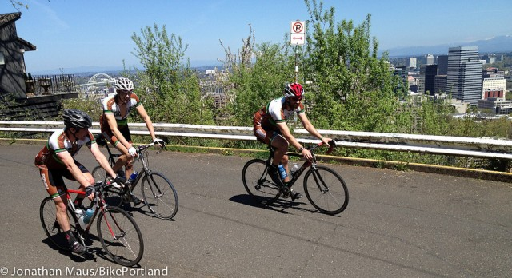

פעילות אירובית ואנאירובית - מה ההבדל?
מי לא מכיר פעילות אירובית? אחד השיעורים הפופולריים ביותר ברוב חדרי הכושר הוא שיעור האירובי, ורבים חושבים על פעילות גופנית כעל פעילות אירובית. אבל פעילות אירובית היא יותר משיעור אירובי בחדר הכושר, ופרט לפעילות אירובית, חשוב לבצע גם פעילות אנאירובית. ההבדל הבסיסי בין פעילות אירובית לפעילות אנאירובית טמון בחמצן. בפעילות אירובית, חמצן עובר בנשימה לשרירים ומספק להם את האנרגיה הדרושה כדי להצליח במאמץ. לעומת זאת, בפעילות אנאירובית אין שימוש בחמצן.
פעילות אנאירובית
מהי פעילות אנאירובית?
פעילות אנאירובית מתמקדת בשרירים ספציפיים. מכיוון שאתם לא מזיזים את כל הגוף, פעילות אנאירובית לא דורשת חמצן, ורק שורפת פחמימות. פעילות כזו היא פעילות ברמת מאמץ גבוהה מאוד, ולכן היא עלולה לגרום לעייפות וחוסר נוחות לאורך זמן, וחשוב לבצע אותה לזמנים קצובים בלבד. זהו בדיוק ההבדל שבין רצים למרחקים קצרים (פעילות אנאירובית) לבין רצי מרתון (פעילות אירובית). בעוד שרצים למרחקים קצרים נדרשים למאמץ גבוה מאוד לזמן קצר, רצי מרתון נדרשים למאמץ מתמשך.
סוגי פעילות אנאירובית
פעילות אנאירובית היא, כאמור, פעילות ברמת עצימות גבוהה מאוד לזמן קצר. דוגמאות לסוגים של פעילות כזו כוללות ריצה למרחקים קצרים, הרמת משקולות או שכיבות סמיכה.
נסו לשלב בין פעילות אירובית מתמשכת עם פעילות אנאירובית קצובה, כדי לשפר את הכושר ולרדת במשקל.
היתרונות של פעילות אנאירובית
פעילות אנאירובית מחזקת את העצמות, מפחיתה את הסיכון לפציעות ומשפרת את תפקוד הלב. היא יכולה להעלות את רמת הכולסטרול הטוב ולשפר גם את חוזק הגידים והרצועות בגוף.
בנוסף, פעילות אנאירובית מסייעת לבניית מסת שריר רזה ולשריפת קלוריות יעילה יותר.
פעילות אירובית
מהי פעילות אירובית?
המשמעות המילולית של אירובי היא "עם חמצן", שכן פעילות אירובית משתמשת בחמצן כדי לשרוף שומן ופחמימות ולייצר אנרגיה. בזמן ביצוע פעילות אירובית אתם משתמשים בידיים וברגליים שלכם, כדי להזיז את הגוף. השרירים פועלים בקצב מתמשך, בדרך כלל ברמה נמוכה עד בינונית של מאמץ, וקצב הלב והנשימה עולים, בזמן שאתם בונים את הסיבולת שלכם. אפשר לבצע פעילות אירובית למשך זמן ארוך יחסית.
סוגי פעילות אירובית
אפשר לחלק פעילות אירובית ל-3 סוגים, לפי רמת המאמץ הנדרשת. הקבוצה הראשונה כוללת פעילות קלה יחסית, כמו הליכה, ריצה, רכיבה על אופניים או טיפוס במדרגות. הקצב צריך להיות נוח, ואתם צריכים להיות מסוגלים לדבר תוך כדי הפעילות, בלי להתנשף מדי. הקבוצה השנייה כוללת פעילות גופנית ברמה בינונית עד אינטנסיבית, כמו שיעורי ריקוד או שחייה, והקבוצה השלישית כוללת פעילות גופנית מאומצת ואינטנסיבית, כמו כדורסל, טניס או כדורעף.
היתרונות של פעילות אירובית
לפעילות אירובית יתרונות רבים והיא יכולה לשפר רבות את רמת הבריאות הכללית.
פעילות אירובית מחזקת את הלב והריאות, משפרת את פעילות המערכת החיסונית, מפחיתה את הסיכון למחלות לב, שבץ, סכרת ולחץ דם גבוה, ובשילוב עם דיאטה מתאימה, היא יכולה לעזור גם בהורדה במשקל.